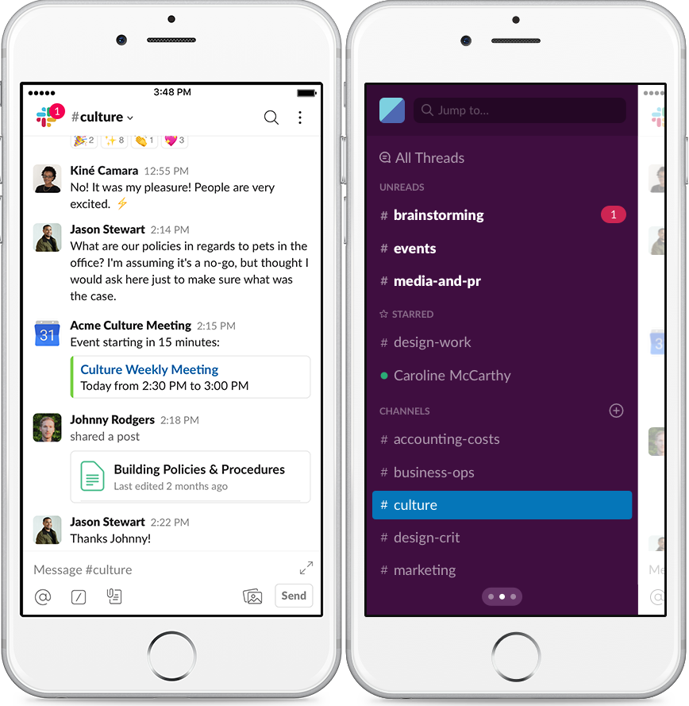
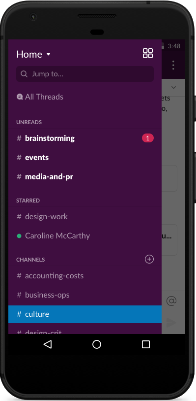
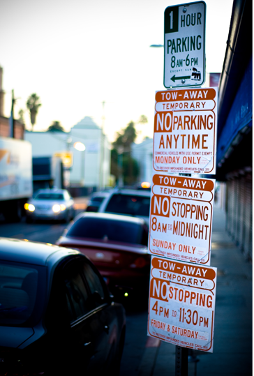
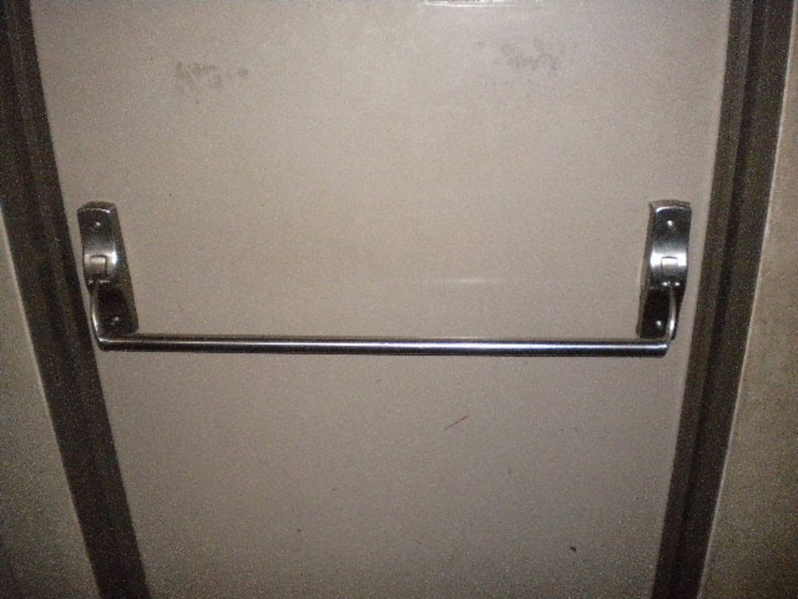

Assignment 1
Good Design
A good user interface design should have the following characteristics:
- Simplicity
- Aesthetic
- Usefulness
- Easy to understand
- Error-free
- Leading
Two examples of good user interface design are:
-
Example 1: Slack Mobile App
Slack is a business communication app which allows easy instant messaging. It's meant for teams and workplaces can be used across multiple devices and platforms, and is equipped with robust features like persistent chat rooms organized by topic, private groups, and direct messaging.
I use this app on a daily bases for communicating with groups for my projects. The particular aspect of this overall interface design that I find good is the side navigation bar.
- Side Navigation Bar

The side navigation bar has a simplistic design which makes it is easy to switch between different channels. The messages are divided into Channels/Private Channels/Direct messages. This makes it easy to view and keep track of all the messages without having them all clustered in one place. The overall user interface design of the side bar looks aesthetic and the fonts are easy to read. I also like how the notifications are displayed with a red circle displaying the number of messages. The interface is designed in a such way so that it meets the user's needs. Overall, this a very good example of a good user interface design and I don’t see any need for further improvements.
-
Example 2: Car Center Console

This is a picture of my car's center console. The aspect that I find to have a good design is the air conditioning controls. The purpose of the overall interface is to control the temperature and the flow of air conditioning in the car.
- A/C Controls
The first thing that I like about the A/C controls is the simplicty of the design. It is very easy to tell which way the knobs should be turned to higher and lower the temperature. The colors are marked blue/red indicating the temperature cool/hot. The interface is designed in such a way that allows the driver or the passenger to change the temperature on their respective side without changing the temperature for both. The driver can have it's own deisred temperature without worrying about the temperature inside the whole car. All the controls are also easy to understand, so for someone who buys a new car would be able to easily use all the controls without any instructions or tutorial. The display is not clustered like some cars and has a minimalisitc view showing the current temperature, a/c flow and the fan speed. Overall, the user is completely aware of all the useful controls, making it a very good design.
Bad Design
An interface having a bad design usually has the following mistakes:
- Unresponsive design
- Clumsy Layout
- Illegible Texts
- Hard to understand
- Errors
Two examples of bad user interface design are:
-
Example 1: Parking Signs
Parking signs are a convinient way to make the drivers to understand parking rules in cities but usually most parking signs are overloaded with information which makes them hard to read and understand, making them a bad interface design. The picture above is a good example of a bad interface design. The parking signs in the picture are hard to understand, because the traffic rules are complex, resulting in the need to convey a lot of information in a small area. A driver trying to park at this spot will have a hard time processing all the information writtem in a small space since it's unclear. The parking times are unclear, requires intense focus, and it would take a while for the driver parking at the spot to understand it. People read parking signs while they drive, so the signs should be readble at a glance. Instead of putting up mutliple signs, one single parking sign conveying all the information would be a much better design and easier to understand.
-
Example 2: Door Handle
Door handles are a part of our everyday lives. So, it is important for a door handle to have a good design. In the picture above it is very hard to tell on what side the hinge is, making it unclear how to open the door. This makes it a bad example of an interface design. You would have a 50% chance of getting the door opened right. There are two ways to make this a better design. One is to either put a label on the side the door opens or change the overall design of the door so that it is simplistic and easy to understand.